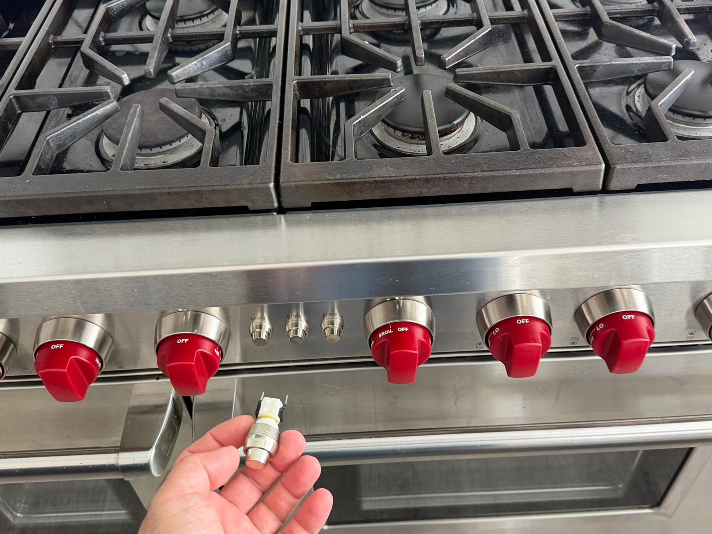
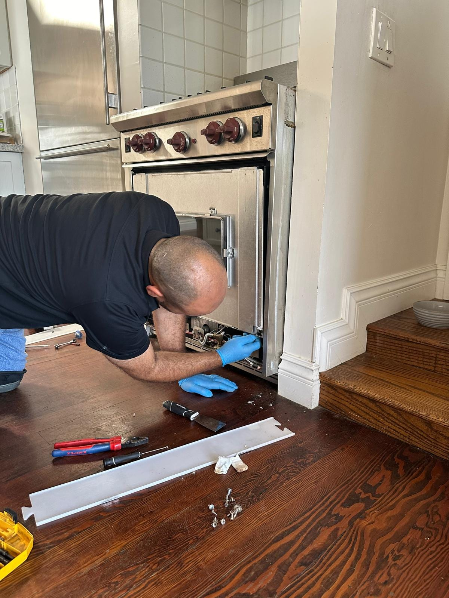

Wolf Appliance Repair in Orange County, CA
Dual-fuel ranges, wall ovens, cooktops, and steam ovens. Sub-Zero's sister brand. We know Wolf inside out.
5.0 · 156 Google reviewsMon–Sat, 8am–7pm.
What to expect
- Flat $99 diagnostic feeApplied toward the repair if you approve the work.
- Written quote firstItemized, before any work starts.
- 90-day parts, 30-day laborWarranty on every repair.
- Same-day serviceCall or request online.
Family-owned since 2017 · Licensed, bonded & insured
Recent Wolf Jobs in Orange County
Four recent Wolf jobs: the bake igniter replaced on a Newport Beach range whose oven would not heat, a convection fan switch replaced on-site on another Newport Beach range, an older Newport Beach built-in double wall oven removed during a kitchen upgrade, and both oven door hinges replaced on a Laguna Beach range.



See photos from completed Wolf repairs in Orange County: View recent Wolf jobs
What Our Customers Say
From our 156 verified 5-star Google reviews
Very curteous, knowledgeable and fast. Great service. Recommend him!
Wonderful service once again!!! Thank you!!!
The best company in Orange County. Recommended AG technician+++++++++
What a Wolf Repair Visit Looks Like
From your first call to a working Wolf range. Here's exactly what to expect at each step.
Request a RepairCall or Request Online
Reach us at (949) 629-5365 or submit the contact form. Tell us the Wolf model and the symptom, and we'll get you scheduled same day if possible.On-Site Diagnosis
A technician arrives in a 2-hour window, tests the appliance systematically, and identifies the root cause. Wolf diagnostics require hands-on experience; we don't guess.Upfront Quote
You get a clear, itemized quote before we start. No surprise charges. The $99 diagnostic fee applies toward the repair if you choose to proceed.Repair & Warranty
Most repairs finish the same day. Every repair carries a 90-day parts and 30-day labor warranty: if the same issue returns within 30 days, we come back at no charge.
Pricing & Discounts
- $99 diagnostic fee: applied toward your repair when you approve the work. If you decide not to proceed, the $99 covers the visit.
- Multi-unit visits: first unit $99, each additional unit on the same visit $49.
- 20% off labor for repeat customers and seniors 60+ (cannot combine with other offers).
Estimates vary by brand, part availability, and diagnosis. Final quote is provided before repair. See full pricing guide
Diagnostic visit$99
- Applied toward the repair when you approve the work
- Itemized written quote before any work starts
- You decide whether to proceed
Wolf Dual-Fuel Ranges, Cooktops, and Wall Ovens: Every Configuration We Service
From the DF Series dual-fuel range to the newest M Touch wall ovens, we service every Wolf configuration sold in Orange County.
- DF Series: Dual-Fuel Ranges
- DF304, DF364G, DF366, DF486G, and the full 30"–48" lineup. Gas burners with an electric convection oven, the configuration most OC homeowners choose. Igniter and spark module issues are the most common calls we handle.
- GR Series: All-Gas Ranges
- GR304, GR364G, GR366. All-gas configuration preferred by professional-style cooking. We service burner igniters, oven thermostat sensors, and convection fan motors on all GR models.
- SRT: Sealed-Burner Rangetops
- SRT304, SRT366, SRT486G. Drop-in rangetops for custom kitchen configurations. Spark module replacement is the most frequent SRT repair. When it fails, no burners will ignite.
- IT Series: Induction Cooktops
- IT15, IT30, IT36. Touch-glass induction tops with precise power control. Touch-glass control failures and zone power board faults are the issues we see most. Glass replacement is available for localized damage.
- M Series: Wall Ovens
- M Series single, double, and convection steam ovens with M Touch control panels. Blank display and unresponsive touch are the most common faults. Control board and door hinge repairs also within scope.
- L Series & CSO / MWC
- L Series electric wall ovens (legacy professional convection), CSO convection steam ovens, and MWC microwave drawers. We service all configurations including convection steam element and door interlock repairs.
Why Wolf Ranges Fail: Igniters, Spark Modules, and Door Switches
Wolf appliances are exceptionally well built, but they have known failure patterns. Here's what we diagnose most often on Orange County service calls.
- Igniter Failure on Gas and Dual-Fuel Burners
- Continuous clicking with no flame, or one burner that won't light while others work fine. The igniter electrode wears at the tip over time. Usually replaced in a single visit; we carry common igniter sets for Wolf DF and GR models.
- Spark Module Failure
- No clicking on any burner: the entire cooktop goes silent when you try to light it. The spark module generates the high-voltage pulse that fires all igniters. When it fails, nothing ignites. Replacement typically takes under an hour.
- Oven Thermostat Sensor Drift
- Oven consistently runs 25–50°F hotter or cooler than the set temperature. The temperature sensor probe, mounted inside the oven cavity, loses accuracy over time. Calibration or replacement corrects it, usually the same day.
- Convection Fan Motor Noise or Failure
- Grinding or squealing during bake or roast cycles, then the oven loses consistent heat distribution. The convection fan circulates hot air evenly; a worn bearing causes noise before the motor eventually seizes.
- Control Board Failure on M Series Wall Ovens
- Blank M Touch display, an oven that won't respond to input, or intermittent control panel freezing. The M Series control board integrates the touch interface and oven logic; board failure is the most expensive common Wolf repair.
- Door Hinge Spring Breakage
- Heavy oven doors put stress on the hinge springs, especially on larger 36"–48" ranges. A door that slams down or won't stay open at any angle has a broken hinge spring, a purely mechanical fix that most techs underestimate.
- Touch-Glass Control Failure on Induction
- An IT Series cooktop that shows error codes, has unresponsive touch zones, or won't power on. The touch-glass assembly integrates the display and control electronics. Replacement requires careful calibration; it's not a DIY job.
- Simmer Burner Module (DF Series)
- Early DF Series dual-fuel ranges had a known simmer burner issue where the low-flame position was unstable. Wolf issued a service bulletin on some model years. We diagnose whether a simmer burner complaint needs a module swap or a burner adjustment.
Wolf's Dual-Stack Design: What Makes It Different to Repair
Wolf's signature dual-stack burner design places the simmer burner directly beneath the power burner on the same port. This gives Wolf ranges their characteristic flame control, but it also means igniter failures present differently than on other gas ranges. When one burner stops lighting, you have to diagnose which burner level is at fault before ordering parts. A technician who doesn't know the dual-stack layout will replace the wrong igniter assembly.
The signature red knob assembly on Wolf ranges is precision-machined to interface with the gas valve. Aftermarket replacements rarely fit correctly. When a Wolf knob becomes stiff or starts slipping, the repair almost always requires an OEM Wolf stem, not a generic part. We stock OEM Wolf components for the most common DF and GR configurations in Orange County.
Wolf M Series wall ovens use a sealed glass-ceramic panel for the M Touch display: a capacitive overlay bonded to the oven face, not a standard touchscreen. When the display shows ghost touches or goes blank, most techs assume control board failure. In our experience, it's the M Touch panel itself more often than the board. We diagnose both before recommending either replacement.
What Wolf Repairs Actually Cost in Orange County
Wolf repairs can cost more than mass-market appliance repairs. Compare the written repair estimate with a current replacement-and-installation quote for a comparable model.
| Repair Type | Typical Range |
|---|---|
| Service call / diagnostic: Orange County market average (often credited toward repair) | $95 – $150 |
| Igniter replacement (per burner) | $200 – $400 |
| Spark module replacement | $350 – $550 |
| Oven thermostat sensor | $250 – $450 |
| Convection fan motor | $350 – $650 |
| Door hinge spring (pair) | $300 – $600 |
| Simmer burner module (DF series) | $400 – $800 |
| Touch-glass replacement (induction) | $800 – $1,400 |
| Control board / UI (M Series) | $700 – $1,500 |
Estimates vary by brand, part availability, and diagnosis. Final quote is provided before repair.
See our full appliance repair cost guide for broader Orange County pricing context.
Wolf repair across Orange County
Universal Appliances Repair Group Inc. provides Wolf appliance repair across Orange County, California, covering dual-fuel ranges (DF series), gas ranges (GR series), sealed-burner rangetops (SRT), induction cooktops, L-Series and M-Series wall ovens, and convection steam ovens. Common service includes igniter and spark module replacement, control board diagnostics, oven thermostat calibration, and door hinge repair.
We serve Newport Beach, Irvine, Costa Mesa, Anaheim, Yorba Linda, Mission Viejo, Coto de Caza, and nearby Orange County cities, with same-day service available. Call (949) 629-5365 or book online to schedule a Wolf repair visit.
Wolf Owners Ask Us These Questions Most
Real questions from Orange County Wolf appliance owners.
Still have a question? Call (949) 629-5365.
Yes. We service Wolf dual-fuel ranges (DF series) and all-gas ranges (GR series) across Orange County. Same-day appointments are available when a technician is open; call (949) 629-5365.
Continuous clicking with no ignition usually points to a worn igniter tip, a cracked igniter cap, or food debris blocking the burner port. If only one burner fails to light, it's almost always the igniter electrode itself. If no burners light, the spark module is the more likely culprit. Most igniter issues are resolved in a single service call.
Wolf oven heating failures most commonly trace to a faulty oven thermostat sensor ($250–$450), a failed convection fan motor ($350–$650), or a control board issue ($700–$1,500 depending on the model). We provide a firm quote before any work starts. The $99 diagnostic fee applies toward the repair if you proceed.
Yes. Spark module replacement on Wolf sealed-burner rangetops (SRT series) is one of our most common Wolf service calls. The module controls the spark to all burners, so when it fails, none of the burners will ignite. Replacement typically takes under an hour.
Yes. We service Wolf IT Series induction cooktops including the IT15, IT30, and IT36 models. Common issues include touch-glass control panel failures and zone power board faults. Induction glass replacement is also available when damage is localized.
Yes. We service Wolf M Series wall ovens, including single, double, and convection steam configurations. M Touch control panel failures (blank display, unresponsive touch) are the most common fault we see on M Series ovens. Control board and door hinge repairs are also within scope.
Igniter replacement, spark module swap, thermostat sensor, and most burner repairs are completed the same day. Control board replacements on wall ovens and jobs requiring special-order parts may take 2–4 additional days once the part arrives. We confirm the timeline after diagnosis.
Wolf appliances are designed to last 20+ years, and most repairs run $250–$900. Compare the written repair estimate with a current replacement-and-installation quote for a comparable model. We give you an honest assessment before recommending any parts.
Wolf Pairs With Sub-Zero: Other Luxury Brands We Repair
Wolf kitchens often pair with Sub-Zero refrigeration. We service the full luxury lineup, so one call covers all your premium appliances.
- DCSProfessional gas and dual-fuel ranges, cooktops, and California-built outdoor grills. Bake igniter and sealed-burner specialists.
- Sub-ZeroBuilt-in refrigerators, wine storage, and column units. Wolf's sister brand.
- MieleGerman luxury dishwashers, washers, dryers, and ovens.
- VikingPro-style ranges, wall ovens, and built-in refrigerators.
- ThermadorPro Grand ranges, Sapphire dishwashers, and Freedom column fridges.
- DacorSamsung-backed American luxury brand. Heritage ranges, ovens, and refrigerators.
Need Wolf Repair in Orange County?
Same-day service available. Call now or book online, and a technician will confirm your appointment within the hour.
Call (949) 629-5365
Request a Repair
Mon–Sat, 8am–7pm